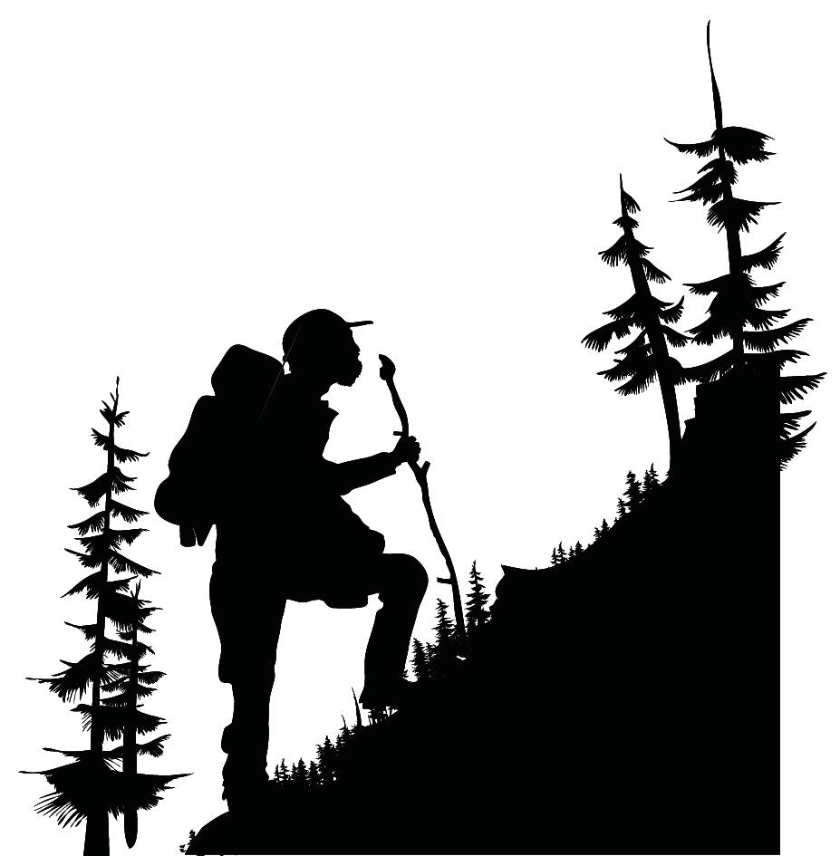

Who We are..?
Established in 2012, Adventure World is a private, nonprofit organization created to favorably impact the Atlanta economy through tourism. The strength of our company lies in our core value of giving our customers the best services with an eye for detail and a strong commitment for a long-term relationship.
View more
What We Do..?
Adventure World with an excellent reputation for conceiving, organising and managing world class trips, Hiking, Rafting etc., in and around Atlanta has organized a number of successfully programs without any black marks.
View more

Social Service!!
Social services include the benefits and facilities such as education, food subsidies, health care, job training and subsidized housing, adoption, community management, policy research, and lobbying. We recognize some needy organizations and will help them according to their needs.
View more
This is the prototype of the website. More images and texts will be added later. Modifications are possible in the final website.